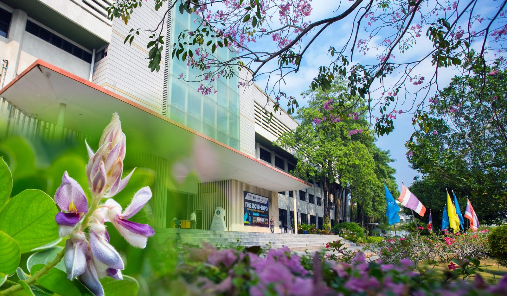
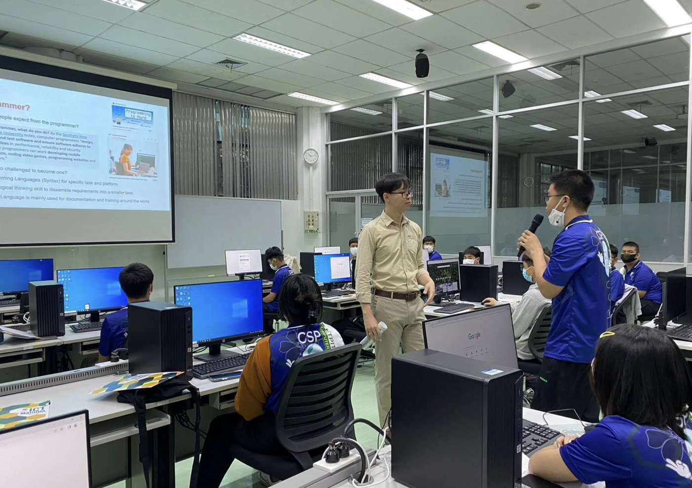
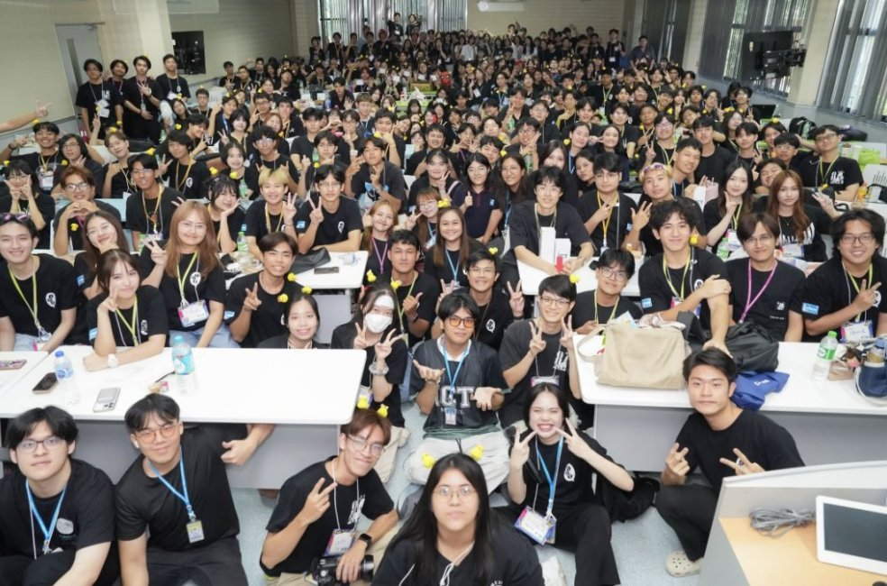
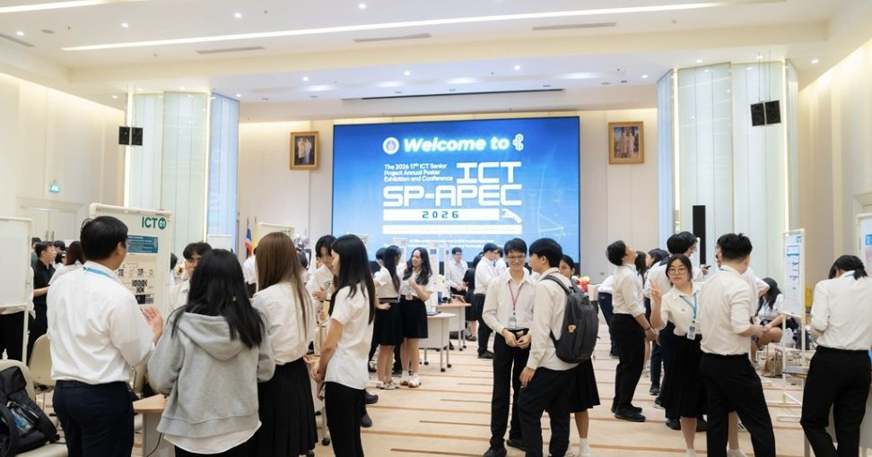

01 / LANGUAGE
English-Taught
ICT Degree
Study technology in English in a four-year international programme. Get comfortable explaining technical ideas in English as you learn.
B.Sc. IN ICT INTERNATIONAL PROGRAMME
Curious about technology and studying abroad? Explore the English-taught ICT degree at Mahidol University in Thailand and discover what you’d like to build.

SALAYA, THAILAND01 THE PROGRAMME
Build a foundation in technology, discover the subjects you enjoy, and put what you learn into practice.
Study technology in English in a four-year international programme. Get comfortable explaining technical ideas in English as you learn.
Try electives across different areas of ICT. Use what you enjoy most to guide which subjects you study further.
Put classroom concepts to work in projects. Practise breaking down problems, testing ideas, and improving your solutions.


02 EIGHT SPECIALIZATIONS
Start with something you already enjoy. Explore a few areas through electives to see what you want to learn in more depth.
Curious how a computer recognises an image? Explore machine learning and computer vision.
Like finding order in messy information? Learn how to organise, store, and retrieve data.
Love design or digital storytelling? Explore computer graphics, virtual reality, and interactive experiences.
Enjoy breaking down a puzzle? Use algorithms and computing principles to solve problems.
Wonder how devices talk to each other? Learn how networks connect them and how to keep those connections secure.
Have an idea for an app? Explore how to design, build, test, and maintain software.
Interested in tech that supports patient care? Explore how information systems are used in healthcare.
Like organising how a team works? See how information systems help organisations improve everyday processes.

SENIOR PROJECTS03 PROJECT-BASED LEARNING
What happens when you put an idea to the test? Projects give you a chance to apply what you’ve learned, find out what works, and explain the choices you made.
04 FOR STUDENTS & FAMILIES
The Bachelor of Science in Information and Communication Technology is an international degree offered by the Faculty of ICT at Mahidol University’s Salaya campus in Thailand.
Applying from China? Use the official International Direct Admissions page to confirm your school qualification, accepted test scores, and deadlines. If you plan to use Gaokao results, check the score options for your intake.
05 YOUR ICT JOURNEY
If studying technology in Thailand feels like your next step, see how to apply to ICT Mahidol.
Explore Admissions